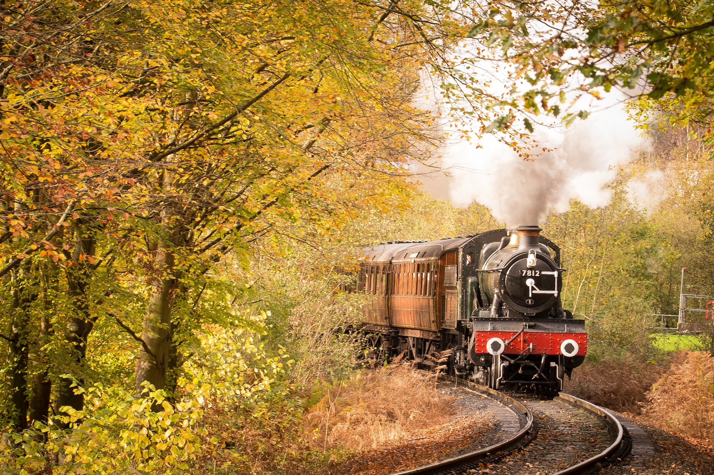
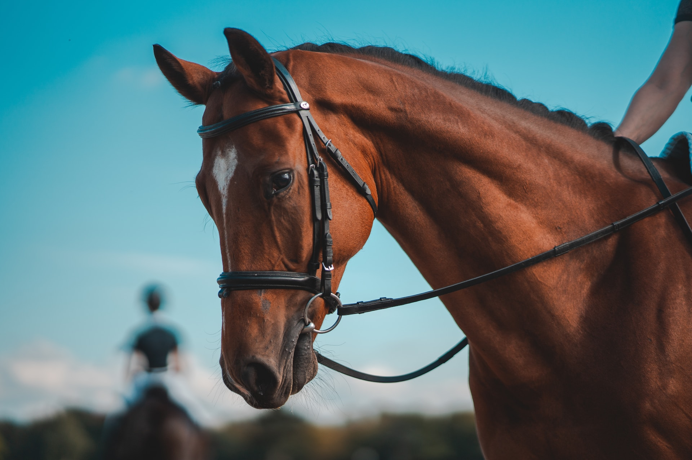
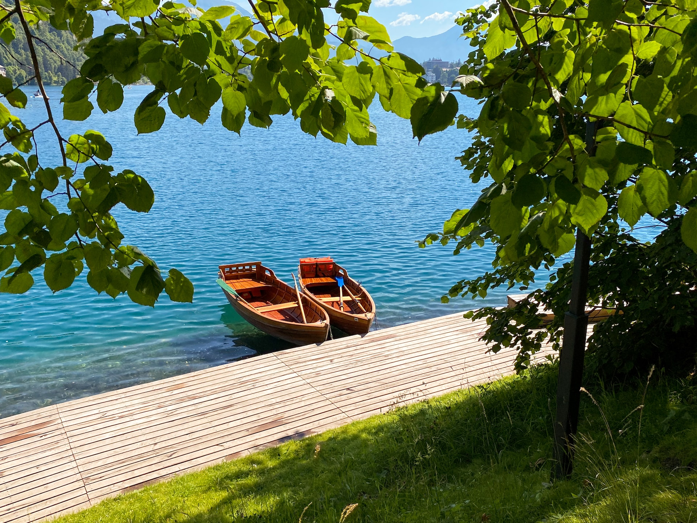
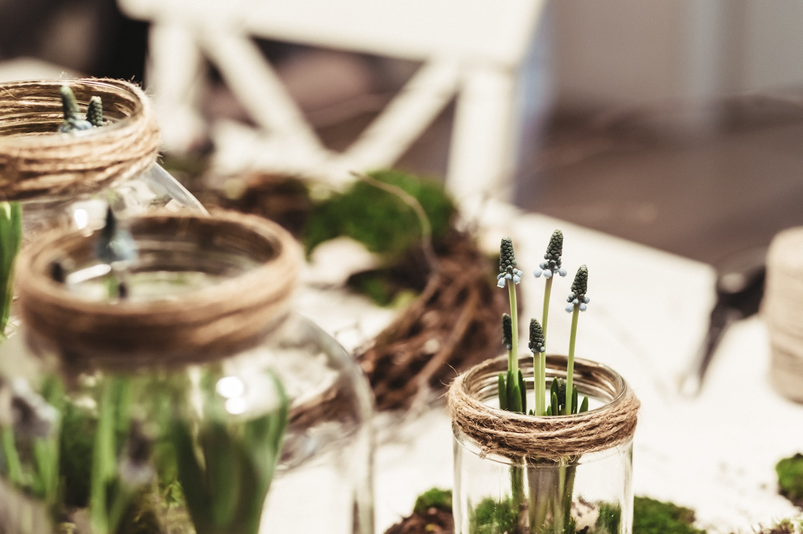
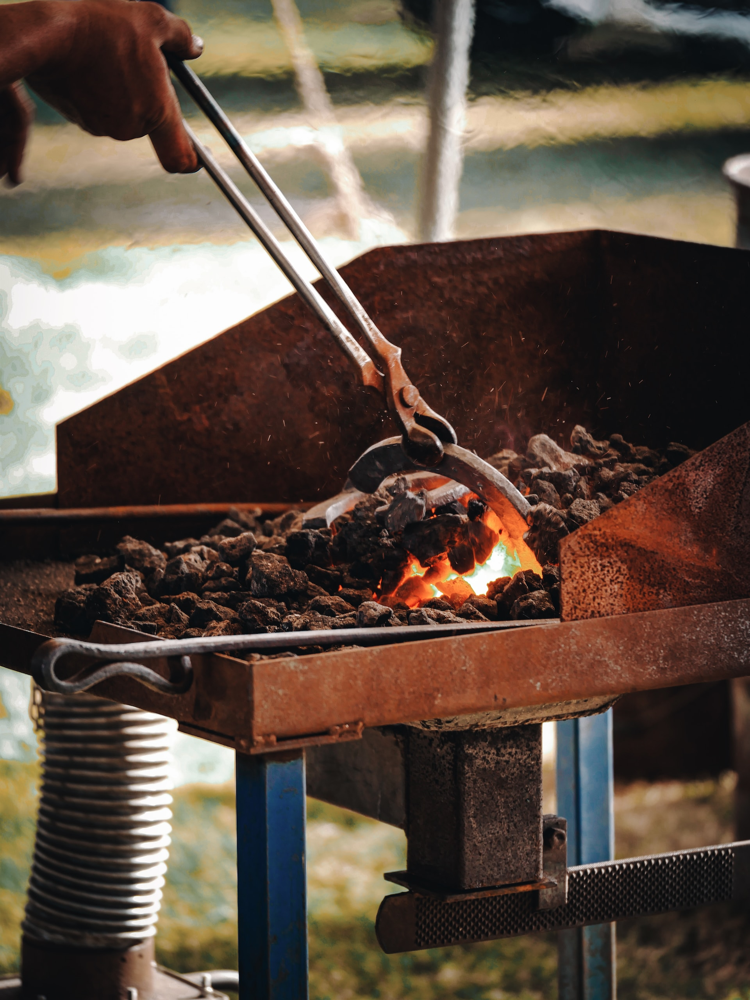
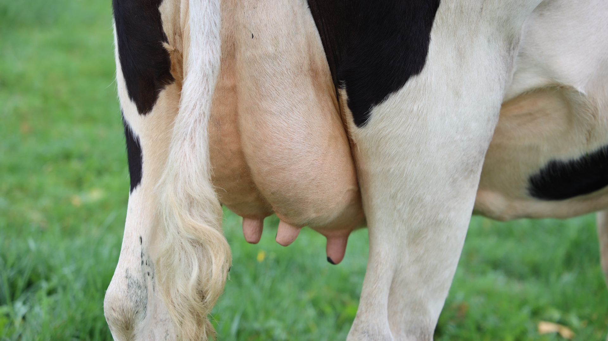
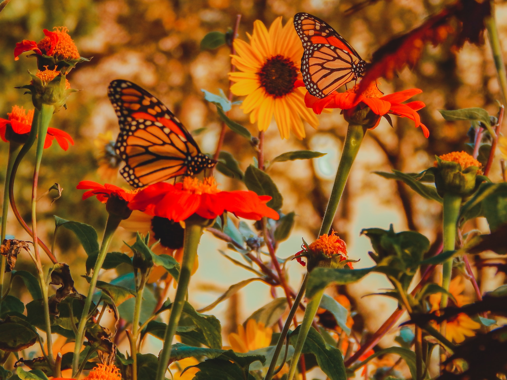

列車探險
歡迎踏上列車探險之旅！我們為您打造了一個充滿驚奇的旅程，讓您穿越整個樂園，一覽各種令人嘆為觀止的景色。坐在舒適的列車車廂中，您將穿越濃郁的森林、跨越壯麗的山脈，還能欣賞到動物們的歡迎。沿途景色不僅美不勝收，還將讓您深刻感受大自然的美麗和力量。列車探險樂園是一個適合全家大小的活動，無論您是年輕探險家還是喜愛大自然的長者，都能在這裡找到歡樂與驚喜。一起乘坐列車，開展屬於您的奇幻之旅吧！
牧野遨遊
體驗牧野遨遊，展開一場奇妙之旅！讓您與馬匹共舞於寧靜草原，感受風的撫慰，聆聽大自然的呼喚。我們提供適合不同程度的騎乘體驗，由專業教練指導，確保您的安全與樂趣。無論是初次嘗試還是有經驗的騎手，都能在這片自然土地上，與馬兒建立深厚的聯繫。讓牧野遨遊成為您紓解壓力、沈浸於大自然的心靈庇護所。一起跨越草原，揚帆前行吧！
划槳體驗
划槳體驗，欣賞湖光山色的美妙！在我們提供的專業教練指導下，您可以與親朋好友一同划行湖面，欣賞周遭秀麗景色。倚靠湖光山色，感受寧靜與寬廣。無論您是尋求冒險刺激，還是希望享受寧靜時光，划槳體驗都能滿足您的需求。這是一個與大自然親近的機會，讓您在水中自由馳騁，收穫美景與愉悅。讓划槳體驗成為您記憶中的一道亮麗風景，期待您的參與！
DIY工作坊
DIY體驗，讓您親手打造專屬的美好回憶！無論是製作手工工藝品、自己動手種植或品嚐自己親手烹飪的美食，我們都提供多樣化的DIY選擇。在專業教練的指導下，您將學習創造力和技能，同時也能感受到製作過程中的樂趣。這是一個將您的創意付諸實踐的機會，讓您在美麗的環境中放鬆身心，同時創造獨一無二的作品。不論您是大人還是小朋友，DIY體驗都能帶來滿滿的驚喜和成就感。讓我們一起動手，為美好的時光留下獨特的印記！
馬蹄藝匠
帶您深入了解修復馬蹄鐵的藝術與製造過程！在我們專業指導下，了解如何修復馬匹的馬蹄鐵，感受到照顧和保護動物的重要性。同時，我們也將帶您進入鑄造的世界，讓您了解馬蹄鐵的製造過程，從原料到成品的精彩轉變。這是一個融合藝術和實用性的體驗，讓您不僅瞭解馬匹的需求，也能感受到手工藝的魅力。無論您是初次體驗還是有經驗的愛好者，馬蹄藝匠體驗都能讓您深入了解這項古老藝術的魅力。
牛奶時光
歡迎加入牛奶時光體驗，親身參與鮮奶的擠取過程！您將與我們的專業人員一同前往養殖場，親手操作擠奶，體驗從牛隻到鮮奶的過程。這個活動不僅讓您瞭解擠奶的技術，也能深入感受農場生活。讓我們一起走進牛奶時光，感受純淨鮮奶的美味與奇妙！
昆蟲探索家
揭開多彩昆蟲世界的神秘面紗！我們將展示多種各具特色的昆蟲，並提供有趣的資訊，讓您深入瞭解這些小生物的生態和習性。您可以近距離觀察、學習，並更深刻地明白它們在生態系統中的重要角色。無論您是大人還是小朋友，昆蟲探索家體驗都能啓發您對大自然的好奇心！